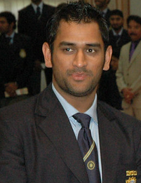

CRICKET

Cricket is a bat-and-ball game played between two teams of eleven players on a field at the centre of which is a 22-yard (20-metre) pitch with a wicket at each end, each comprising two bails balanced on three stumps. The batting side scores runs by striking the ball bowled at the wicket with the bat (and running between the wickets), while the bowling and fielding side tries to prevent this (by preventing the ball from leaving the field, and getting the ball to either wicket) and dismiss each batter (so they are "out"). Means of dismissal include being bowled, when the ball hits the stumps and dislodges the bails, and by the fielding side either catching the ball after it is hit by the bat and before it hits the ground, or hitting a wicket with the ball before a batter can cross the crease in front of the wicket. When ten batters have been dismissed, the innings ends and the teams swap roles. The game is adjudicated by two umpires, aided by a third umpire and match referee in international matches. They communicate with two off-field scorers who record the match's statistical information.
Forms of cricket range from Twenty20, with each team batting for a single innings of 20 overs, to Test matches played over five days. Traditionally cricketers play in all-white kit, but in limited overs cricket they wear club or team colours. In addition to the basic kit, some players wear protective gear to prevent injury caused by the ball, which is a hard, solid spheroid made of compressed leather with a slightly raised sewn seam enclosing a cork core layered with tightly wound string.
The earliest reference to cricket is in South East England in the mid-16th century. It spread globally with the expansion of the British Empire, with the first international matches in the second half of the 19th century. The game's governing body is the International Cricket Council (ICC), which has over 100 members, twelve of which are full members who play Test matches. The game's rules, the Laws of Cricket, are maintained by Marylebone Cricket Club (MCC) in London. The sport is followed primarily in the Indian subcontinent, Australasia, the United Kingdom, southern Africa and the West Indies. Women's cricket, which is organised and played separately, has also achieved international standard. The most successful side playing international cricket is Australia, which has won seven One Day International trophies, including five World Cups, more than any other country and has been the top-rated Test side more than any other country.
A city where we live India also play cricket
The India men's national cricket team, also known as Team India and Men in Blue, is governed by the Board of Control for Cricket in India (BCCI), and is a Full Member of the International Cricket Council (ICC) with Test, One-Day International (ODI) and Twenty20 International (T20I) status.
Cricket was introduced to India by British sailors in the 18th century, and the first cricket club was established in 1792. India's national cricket team did not play its first Test match until 25 June 1932 at Lord's, becoming the sixth team to be granted test cricket status. From 1932 India had to wait until 1952, almost 20 years for its first Test victory. In its first fifty years of international cricket, India was one of the weaker teams, winning only 35 of the first 196 Test matches it played. The team, however, gained strength in the 1970s with the emergence of players such as batsmen Gavaskar, Viswanath, Kapil Dev, and the Indian spin quartet.
Traditionally much stronger at home than abroad, the Indian team has improved its overseas form, especially in limited-overs cricket, since the start of the 21st century, winning Test matches in Australia, England and South Africa. It has won the Cricket World Cup twice – in 1983 under the captaincy of Kapil Dev and in 2011 under the captaincy of Mahendra Singh Dhoni. After winning the 2011 World Cup, India became only the third team after West Indies and Australia to have won the World Cup more than once,and the first cricket team to win the World Cup at home.It also won the 2007 ICC World Twenty20 and 2013 ICC Champions Trophy, under the captaincy of MS Dhoni. It was also the joint champions of 2002 ICC Champions Trophy, along with Sri Lanka.India is the only Team to reach finals in all ICC events.
The Indian cricket team has rivalries with other Test-playing nations, most notably with Pakistan, the political arch-rival of India. However, in recent times, rivalries with nations like Australia, South Africa and England have also gained prominence.
As of 10 March 2021, India is ranked first in Tests, second in both ODIs and T20Is by the ICC.
FAMOUS PLAYER OF INDIA

MS Dhoni
Mahendra Singh Dhoni born 7 July 1981, is a former Indian international cricketer who captained the Indian national team in limited-overs formats from 2007 to 2017 and in Test cricket from 2008 to 2014. Under his captaincy, India won the inaugural 2007 ICC World Twenty20, the 2010 and 2016 Asia Cups, the 2011 ICC Cricket World Cup and the 2013 ICC Champions Trophy.
To know more about MS Dhoni click on link

Virat Kohli
Virat Kohli born 5 November 1988 is an Indian cricketer and the current captain of the India national team. A right-handed top-order batsman, Kohli is regarded as one of the best contemporary batsmen in the world
To know more about Virat Kohli click on link
Rohit Sharma
Rohit Gurunath Sharma (born 30 April 1987) is an Indian international cricketer who plays for Mumbai in domestic cricket
To know more about Rohit Sharma click on link

Sachin Tendulkar
Sachin Ramesh Tendulkarborn 24 April 1973 is an Indian former international cricketer who served as captain of the Indian national team.
To know more about Sachin Tendulkar click on link